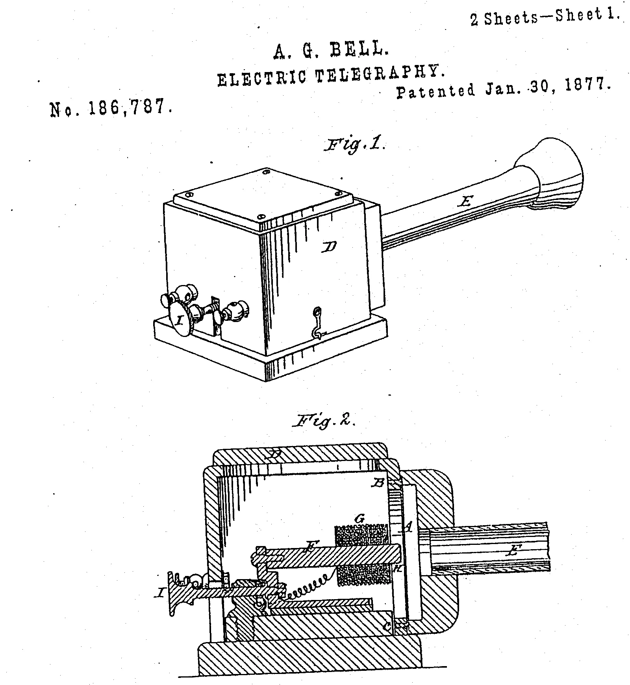

Placeholder · 01
Name to come
A short bio goes here, written by the person it’s about.

A. G. Bell · US 186,787 · 1877
Today’s phone · six pieces
Every piece, built meticulously, until it serves the grand design…
The hallway’s lock goes see-through: we go in through the keyhole, past its pins, and come out to the same lock repeated on every point of a grid, rows running in every direction. They unlock in a wave, then fold back into one lock.
Draft
Your business runs on thousands of locks.
Draft
We make sure only the right keys turn them.
Draft
First, the obvious key.
Draft
It fails. Most people stop here.
Draft
We don’t.
The same lock, drawn as a cutaway: the obvious key goes in and fails. Then the lock is picked, one pin at a time, seven pins for the seven steps: understood, imagined, drew, tested, felt, refined, delivered. On the last pin it turns. (The real lock has five pins; the drawing gives it seven, one per step.)
Draft · 01 / 03 · AI
AI drafts the reply. Nothing goes out until a person says yes.
Property app · enquiries
From a customer
Is the villa by the park still free? Could I see it on Saturday?
Drafted by AI · waiting for you
Yes, it’s still free. Would Saturday at 11:00 or 15:00 suit you?
Draft · 02 / 03 · Websites
We draw it on the grid first. Then it becomes real.
Booking app · its website
A table for tonight, in two taps.
Pick a day, pick a time. We hold your table.
Draft · 03 / 03 · Apps
Your customers watch their order move, live.
Draft wording · pending Wajih
AI: on our property app, an AI drafts the reply to a customer’s enquiry, and nothing is sent until a person approves it.
Websites: our booking app’s website, drawn on the grid first, then made real.
Apps: our delivery tracker, running live on an iPhone and an Android phone.
Placeholders · the real people go in before launch
Placeholder · 01
Name to come
A short bio goes here, written by the person it’s about.
Placeholder · 02
Name to come
A short bio goes here, written by the person it’s about.
Placeholder · 03
Name to come
A short bio goes here, written by the person it’s about.
Tick everything that fits.
Draft wording · pending Wajih